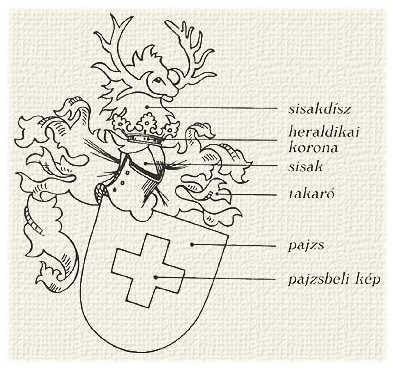

Heraldika
*
A heraldika vagy címertan (korábban czímerintézmény, címerészet) a címerekkel foglalkozó történeti segédtudomány. Elnevezését a heroldokról kapta, akik a címerek elsõ középkori szakértõi voltak. A heraldika két részre oszlik: címerelméletre és címermûvészetre.
- A címerelmélet , elméleti heraldika vagy a szorosabb értelemben vett címertudomány a címerjogot, a címerek történetét érinti, a szabályos és szabályellenes címerekkel, a címerismerettel (régiesen: címerisme) foglalkozik.
- A címermûvészet , a címerábrázolás tana vagy címergyakorlat a címerek szabályos megszerkesztésével, megrajzolásával (kiállításával), leírásával, gyakorlati alkalmazásával, historizálásával és a címerkritikával foglalkozik.
A címer olyan, általában pajzson viselt, meghatározott szabályok szerint megszerkesztett színes jelvény, melyet egy család, intézmény vagy testület a saját maga azonosítására örökletes, állandó jelleggel használ.
A címer összetevõi

A címer legfontosabb része a pajzs, mivel az elsõ ilyen megkülönböztetõ jeleket is a pajzsokon viselték. Ezért a tulajdonképpeni címernek a pajzsot mint alakot tekintjük. A címer többi részei az úgynevezett címerrészek és címertartozékok. A pajzsból, sisakból, sisakkoronából, sisaktakaróból és sisakdíszbõl álló címert teljes címernek is nevezik. A címer akkor is címer marad, ha csak a pajzsból áll. A többi címerrész el is maradhat, de a pajzs sohasem hiányozhat.
A címerpajzsnak a címerábrák elhelyezésére szolgáló felülete a mezõ. A pajzsot a címerviselõ szemszögébõl kell szemlélni, mintha az a mellvértjén lenne, vagyis ami szembõl nézve vagy papírra vetve a jobb oldalon van, az a viselõ szemszögébõl és így a heraldikai nevezéktan szerint is bal oldali. A mezõt különféle színekkel lehet bevonni. Ezek lehetnek fémek (arany és ezüst), színek (vörös, kék, zöld, fekete, bíbor) és prémek vagy bundabõrök (hermelin, evet, mál). Ezek összefoglaló neve borítás, míg a fémek és a színek összefoglaló neve mázak.
A címerhatározó klasszifikációs rendszere a címerképeket hat csoportba osztja:
- emberek ;
- tárgyak ;
- állatok ;
- természeti tárgyak és jelenségek ;
- növények ;
- egyéb címerképek
Az adott képen ábrázolt lény rendszertani besorolását a fej határozza meg, a kentaur ezért került pl. az ember csoportba. Az állatokra is érvényes, hogy azon lények besorolásánál, melyeknek nincs külön neve és két eltérõ állat testrészeibõl állnak (például medvefejû és oroszlántestû lény), a fej (és annak máza) a releváns, az állatot a fej szerint soroljuk be a rendszerbe (adott példában a medvék közé).
A heraldikában rendkívül gyakori az oroszlán és a sas. Sokszor további megkülönböztetõ jegyekkel is rendelkeznek, mint például lépõ, ülõ, ugró, ágaskodó, visszanézõ stb. oroszlán és más négylábú állatok. Az állatok eltérõen színezett csõrét, karmait, patáját, agyarait, fogait, esetleg uszonyait, sörényét, farokvégét stb. a címerleírásban fegyverzetnek nevezzük. Így például beszélhetünk arannyal fegyverzett vörös oroszlánról. A növények között gyakori a heraldikai liliom és a heraldikai rózsa. A természeti tárgyak közül a magyar heraldikában nagyon gyakori a (hatágú) csillag és a félhold, valamint viszonylag gyakori a nap is.
A fekete-fehér ábrákon a színeket általában vonalkázással jelölik: